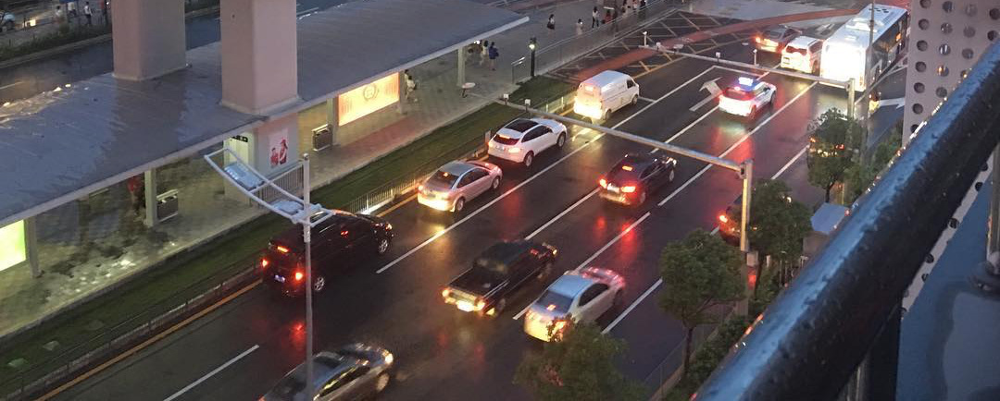

小资产阶级的狂热

呀，不到20个小时的火车我就害怕啦。
呀，蚊子太多我就好烦那。
呀，人好扯活动好烂我就想跑路。
原来我一遇到这些就想要退缩，这个就是他们说的小资产阶级所说的狂热吧？然后河南的活动让我怎么说呢，本来我是抱着去学习的目的的，可是竟然让我去影响别人，我rz，我水平好低那，怎么可能影响成呢？还是放过我吧。
哇，不到一个月我竟然跨度了大半个中国那。西安的城墙很帅，兰考的农民朋友好热情，南昌的菜很好吃很好吃，哇哈哈～原来然东也是个游戏粉，我rz。再然后在兰考发现俗人扯人真的好多好多好多，我懒得跟你们扯呀，还好还有好书可以读，不然这个世界就完蛋了。
让我感触最最最深的是，到了黄河边上一毛主席纪念亭的时候那一帮人首先快速的挖了两洞，我还没闹明白怎么回事呢，就吩咐我们众小弟去拾柴火去了。 －－" 原来是埋锅做饭…. 好无聊好无聊，每天都是徘徊在做饭和吃饭之间。再然后是晚会，最后村民居然大部分都不看啦，大概这晚会应该整个活动扯的高潮吧？
活动虽然很扯，可是还有你们呢。有好玩的猫猫熊，不对不对，应该是战斗猫猫熊（还应该高举双臂），有昆华大哥讲好多好多典故，有整天和我腻在一起的葛猴子，当然还有郑大猴子，有跟一起去买老冰棍的佟猴子，然后你们第一小分队。BTW，黄河边睡觉很嗨，昆华唱歌很好听，想听你唱毛泽东。MD，我也想唱歌给你们听可惜我不会，nnnnnnnnnnnd
好吧，我也承认我是小资产阶级的狂热，可是好多年来我都没有退缩呀。骑士的热忱，这词多有爱多适合我。
「天空微亮，眼睛已明亮。我开始不再无节制的赖床。再会，我亲爱的懒虫。我还要经历艰险的航程，记录最美丽的风景，实现最光荣的梦想。」